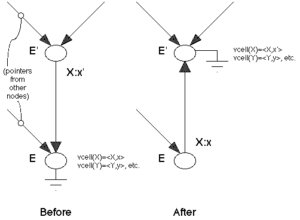

Key Words and Phrases: Lisp 1.5, environment trees, FUNARG's, shallow binding, deep binding, multiprogramming, Algol display
CR Categories: 4.13, 4.22, 4.32
The Maclisp interpreter [7] solves this problem through a scheme called "shallow binding". In this scheme, each variable has a value cell, which can be accessed in constant time, and the bindings associated with the current environment are kept in these value cells so that they can be accessed without any search. Whenever a context change occurs, such as when calling or returning from a function, some of the value cells must be changed or restored. Since Lisp uses dynamic variable scoping, the changes in the environment mirror those in the return-point stack, so Maclisp saves the old bindings from the value cells on a parallel stack called the specpdl\1/ when calling a procedure and restores them from the specpdl when returning from a procedure. As a result, variable access time in Maclisp is constant and context-switching time is unbounded, whereas in so-called deep binding systems like Lisp 1.5, the access time is unbounded and the context-switching time is constant. Thus, a tradeoff exists between the time needed to access the binding of a variable and the time needed to switch contexts, and whenever variable access is more common than context switching, shallow binding is more efficient.
However, the scheme used in Maclisp cannot be used to implement shallow binding in Lisp 1.5, because it does not handle function-producing functions (so-called upward FUNARG's [8] ) correctly. In fact, no stack-based environment structure can do so because using LIFO allocation discipline for Lisp environment nodes can lead to the premature unbinding of the free variables required by these upward FUNARG's. On the other hand, our model for shallow binding keeps a tree environment structure and allocates environment nodes in the heap, and it is therefore capable of handing full FUNARG's.
The system is initialized so that the current environment pointer points to the top level environment, an environment node having a dummy binding and a NIL parent, thus identifying it as the current root. The value cell of each variable is initialized to its top level binding, i.e. the pair <variable-name,top-level-value>, where the redundant variable-name simplifies programs presented later. If the variable has no top level value, top-level-value is the distinguished indicator "UNBOUND", which causes a trap if the interpreter tries to return it as the value of a subexpression.
The algorithm for accessing a variable is: 1) search the environment tree from
the current environment to the root, and if the variable name is found, use the
associated binding; else 2) use the binding in the value cell. Figure 1 gives
Mlisp-like code for a version of Lisp's assoc function which implements this
algorithm.
Fig. 1. Variable lookup mechanism.
assoc[v,a] = // Return the binding of v in the environment a.
[parent[a]=NIL -> vcell[v];
v=name[binding[a]] -> binding[a];
T -> assoc[v,parent[a]]]
parent = CDR // Parent, binding, and name are new names
binding = CAR // for cdr, car, and car, respectively.
name = CAR
vcell[y] returns the value cell of variable y, which is a cons cell having
the structure (y . value[y]), in constant time.
So far we have described a conventional deep binding interpreter in which the
global or top level value of each variable is kept in its value
cell. In order to convert this system into a shallow binding system, we
need only make sure that the distance from the current environment to the root
in the environment tree is short; i.e. we make sure that the current
environment is always the root. In this case, the search is always trivial
and is eliminated.
The way that we do this is to reroot the environment tree at each context-switch,\2/ so that the context to be switched to becomes the new root. The rerooting algorithm is quite simple. Suppose that E is the current root of the environment tree and E' is any other node in the tree which we wish to become the new root. Since E is the current root of the tree, the "parent" path in the tree from E' will terminate at E. We make two passes over that path, one forward pass and one backward pass. On the forward pass, we go from E' to E, stacking the nodes as we go. On the backward (relative to the original path) pass, we go from E back to E', reversing the binding links and exchanging the values in the association pairs with those in the value cells. This has the effect of terminating with the proper values for E' in the value cells.
Figure 2 presents a modified assoc function which gets a variable
binding directly from its value cell without any search and a modified
apply function which reroots the environment tree whenever a context
switch is made. These functions are intended to work with a Lisp interpreter
like that found in the Lisp 1.5 Programmer's Manual
[6].
Fig. 2. Continuous shallow-binding interpreter.
assoc[v,a] = vcell[v] // Return the binding of v in the current environment a.
apply[f,x,a] = // Apply function f to arguments x in environment a.
[atom[f] ->[f=CAR -> caar[x];
f=CDR -> cdar[x];
f=CONS -> cons[car[x],cadr[x]];
f=ATOM -> atom[car[x]];
f=EQ -> car[x]=cadr[x];
T -> apply[eval[f,a],x,a]];
car[f]=LAMBDA -> prog1[eval[caddr[f],reroot[pairlis[cadr[f],x,a]]],reroot[a]];
car[f]=FUNARG -> prog1[apply[cadr[f],x,caddr[f]],reroot[a]]]
pairlis[vars,vals,a] = // Extend environment a with new bindings of vars to vals.
[vars=NIL -> a;
T -> cons[cons[car[vars],car[vals]],pairlis[cdr[vars],cdr[vals],a]]]
reroot[a] = // Make a the new root.
[parent[a]=NIL -> a; // a is already the root.
T -> onestep[a,reroot[parent[a]]]]
onestep[new,old] = // new is new root; old is old root.
prog[[];
parent[new] := NIL, // Reverse binding link.
parent[old] := new,
binding[new] :=: binding[old],
binding[old] :=: vcell[name[binding[old]]]; // Exchange binding with value cell.
return[new]]
progi[<e1>, <e2>, ..., <en>] evaluates <e1>, <e2>, ..., <en> in order and
returns the value of <ei>.
":=:" indicates an exchange operation.
We outline a proof of correctness for our model in two stages. We show that
the root of the environment tree can be moved one step while preserving
assoc[v,a] for all variables v and all environments a, and
then we exhibit a rerooting procedure which finds an appropriate directed path
for the root movement and moves it by iterating the single-step method.
To prove that single-step movement is possible, consider the two nodes E and E' of the environment tree in Figure 3. Before the transformation, E is the root and E' is some other node exactly one step from the root. Now since E' is only one step from E, it differs from E in the value of exactly one variable, which we can assume to be "X" without loss of generality. Now since E is the root, X's binding to x in that context is stored in X's value cell. The directed link from E' to E encodes the fact that the binding of X in E' is different, namely x'.
Fig. 3. The one step environment transformation.

Now to reroot the tree at E', we need only rearrange values and pointers in such a way that the bindings returned by assoc for both E and E' are not affected, yet E' becomes the new root. The appropriate change is to invert the link between E' and E, and exchange the binding on the link (<X,x'>) with the binding in X's value cell (<X,x>). This accomplished, we notice that assoc will still return the correct binding for X in both E' and E. Furthermore, the bindings of other variables in E and E' have not been affected, since those bindings remain in their value cells. Finally, the bindings of variables in contexts which point to E' or E have not changed, since E' and E retain their identities in the values they assign to variables. Thus, single step root movement is possible, and can be iterated to make any node in the tree the root.
However, if we desire to make a root from an arbitrary node, we must interpolate a path from the root to that node since the root may move only one step at a time. Since the environment structure is a tree, such a path always exists and is unique. The rerooting procedure described above traces this path forwards from the arbitrary node to the root and iterates the single-step transformation on the way back.
Since the parent links must be reversed on the second pass anyway, we can
reverse them on the first pass and avoid the use of a stack. Figure 4
illustrates this technique. This program for rerooting has much in common with
the Deutsch-Schorr-Waite stackless list-tracing technique
[5].
Fig. 4. Stackless rerooting.
reroot[a] = // Make a the new root using Deutsch-Schorr-Waite.
prog[[r,b,p]
r := nreverse[a], // Reverse a as in D-S-W.
b := binding[r], // Save dummy binding from the old root.
p := r, // Initialize p for loop.
while parent[p] != NIL
do prog3[binding[p] := binding[parent[p]],
binding[p] :=: vcell[name[binding[p]]],
p := parent[p]],
binding[a] := b,
return[a]]
nreverse[a] = nreconc[a,NIL] // Destructively reverse list a, by flipping CDR pointers.
nreconc[a,b] =
[a=NIL -> b;
T -> nreconc[cdr[a],rplacd[a,b]]]
rplacd[x,y] = prog2[cdr[x]:=y,x]
The continuous shallow binding interpreter presented above is equivalent to the
Maclisp interpreter for that class of Lisp programs which do not have FUNARG's,
in the sense that the tree environment it creates consists of a single
path (tree with no branches) which is isomorphic to the Maclisp
specpdl. However, our implementation of the model, being simple for
pedagogic reasons, is not necessarily the most efficient way to perform shallow
binding; e.g. since our environment nodes live in the heap rather than on a
stack, they are more costly to reclaim.
Fig. 5. Casual shallow-binding interpreter.
assoc[v,a] = // The original deep-binding assoc.
[parent[a]=NIL -> vcell[v]; // Is a the root?
v=name[binding[a]] -> binding[a];
T -> assoc[v,parent[a]]]
apply[f,x,a] =
[atom[f] -> [f=CAR -> caar[x];
...
f=SHALLOW -> prog2[reroot[a],T] // Return T as value of shallow[]
T -> apply[eval[f,a],x,a]];
car[f]=LAMBDA -> eval[caddr[f],pairlis[cadr[f],x,a]];
car[f]=FUNARG -> apply[cadr[f],x,caddr[f]]]
This flexibility to run some functions shallow and some deep may reduce overall
running time. For example, a tight loop might run faster when shallow bound,
while an interrupt handler might run better deep bound, since rerooting can be
time consuming.Lisp 1.5 can also be augmented with primitives for multiprocessing such as fork, P, and V. Several processes can be active in the same environment tree in such a system. Since rerooting preserves the value of assoc[v,a], executing shallow[] in any process cannot affect the values of the variables in the other processes so long as rerooting is indivisible.\3/ Of course, if more than one process tries to do continuous shallow binding, then we will get a form of thrashing in which the system spends all of its time rerooting!
We now see that these display variables are the ones being shallowly bound in Dijkstra's display vector; indeed, the display is simply a vector of memory locations each acting as a value cell for a display variable.
Rerooting is thus a value-preserving transformation on a tree environment structure and has nothing to do with how the structure was created; e.g. the interpreter could use either lexical or dynamic scoping, or even some combination of the two [1].
Acknowledgments. I wish to thank Richard Stallman, Guy Steele, Ben Wegbreit, and the referees for their helpful comments and criticisms of this paper.
Received April 1976; revised October 19772. Galley, S., and Pfister, G. The MDL Language. Programming Technology Division SYS.11.01. Proj. MAC, M.I.T., Cambridge, Mass., Sept. 1975.
3. Greenblatt, R. The Lisp Machine. A.I. Working Paper 79, M.I.T. A.I. Lab., Cambridge, Mass., Nov. 1974.
4. Henhapl, W., and Jones, C.B. A run-time mechanism for referencing variables. Inform. Processing Letters 1 (1971), 14-16.
5. Knuth, D. The Art of Computer Programming, Vol. I: Fundamental Algorithms. Addison-Wesley, Reading, Mass., 1968, p. 417.
6. McCarthy, J., Abrahams, P., Edwards, D., Hart, T., and Levin, M. LISP 1.5 Programmer's Manual. M.I.T. Press, Cambridge, Mass., 1965, especially pp. 12-13, 70-71.
7. Moon, D. MACLISP Reference Manual, Revision 0. Proj. MAC, M.I.T., Cambridge, Mass., 1974.
8. Moses, J. The function of FUNCTION in LISP. Memo 199, M.I.T. A.I. Lab., Cambridge, Mass., June 1970.
9. Randell, B., and Russell, L.J. ALGOL 60 Implementation. Academic Press, London and New York, 1964, pp. 65-68, 75.
10. Teitelman, W. InterLISP Reference Manual. Xerox Palo Alto Res. Ctr., Palo Alto, Calif., 1974.
11. Urmi, Jaak. A Shallow Binding Scheme for Fast Environment Changing
in a "Spaghetti Stack" Lisp System. TR LiTH-MAT-R-76-18, Linkoeping Univ.
(This independent paper of Urmi's almost discovers rerooting, but keeps
Greenblatt's "up/down" bits
)
\1/
Special variable push down list.
\2/
A context switch is required for
\3/
We note that although a variable binding might be passed around in our
scheme, there is only one copy of it, and hence this scheme is free
from the "multiple copy update problem" of other fast access methods
such as caches.
\4/ Except for the fact that Algol 60 does not support pointer variables!
\5/ We now assume that activation records live somewhere off in a heap.
\6/ This naming convention tends to minimize the number of names required, e.g. if the value cells are implemented in special hardware registers as in the Burroughs B5500. Display variables can have any names consistent with the lexical scoping rule, including a distinct one for each block [4].